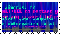
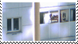
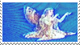
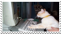
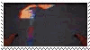
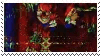
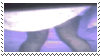
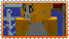

Now I like to collect the decorative graphics and started to have too many for my webmaster page so now it has it's own page.
The ones with specific sources (taken from the original creator who asks for credit, or doesn't) will be clickable. Others without a source (found in one or more random recource sites for example) will not, unless I find the creator.
Buttons

Stamps








Blinkies

I didn't understand having a page with so many images, but now that my little collection got too big for a small corner in my webmaster page, I have one now.